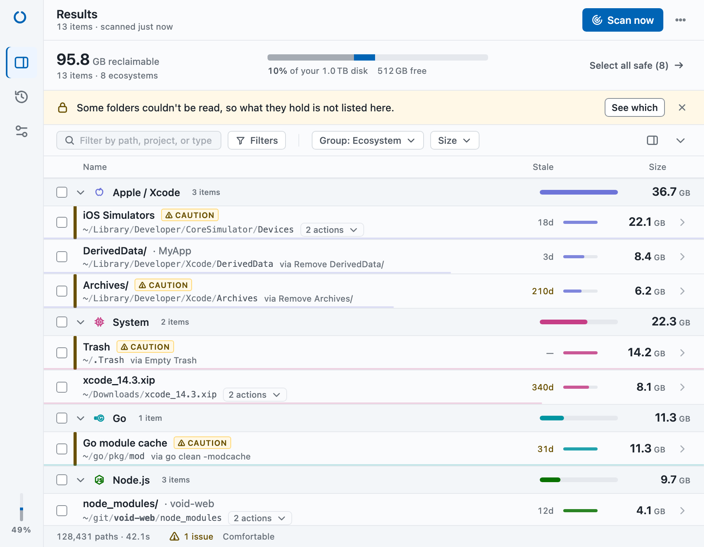

Void finds the build artifacts your projects left behind — across 11 ecosystems — and tells you exactly what each cleanup will do before it runs.
curl -fsSL https://raw.githubusercontent.com/eladbash/void/main/install.sh | sh
macOS, Windows and Linux · MIT licensed · no account, no telemetry

Every project you touch leaves something behind. Void answers where it is, how much it costs you, and whether it is safe to remove.
A multi-threaded walker sweeps your scan roots in parallel and streams results as it finds them. No waiting for a total before you can start reading.
Void never hides what it is about to run. Whether it is cargo clean, docker builder prune or a plain delete, you see the literal command before you approve it.
Every artifact carries its age, so you can clean what you genuinely stopped using instead of the project you opened this morning.
Each clean is kept locally with the paths, the commands and the bytes recovered — including the honest note when a command could only be estimated.
Reclaimable space at a glance and a one-click scan, without leaving whatever you were doing.
Scan roots, enabled ecosystems, staleness thresholds and a blocklist of folders Void must never touch. Settings are plain JSON on disk.
Void is a tool that removes files, so it is built to be argued with rather than trusted blindly.
An item can offer several cleanups at different risk levels. Void shows the risk of the one that will actually run, and lets you pick a different one.
An all-safe batch is one click. Anything riskier is itemised with its command. Permanent deletion asks you to type delete.
Keychains, SSH and GPG keys, cloud credentials, shell config and your Documents folder are protected regardless of how Void is configured.
When an artifact can be moved rather than destroyed, Void prefers that by default — and says plainly which actions cannot be undone.
Void knows what each toolchain leaves behind and how that toolchain prefers to clean it up.